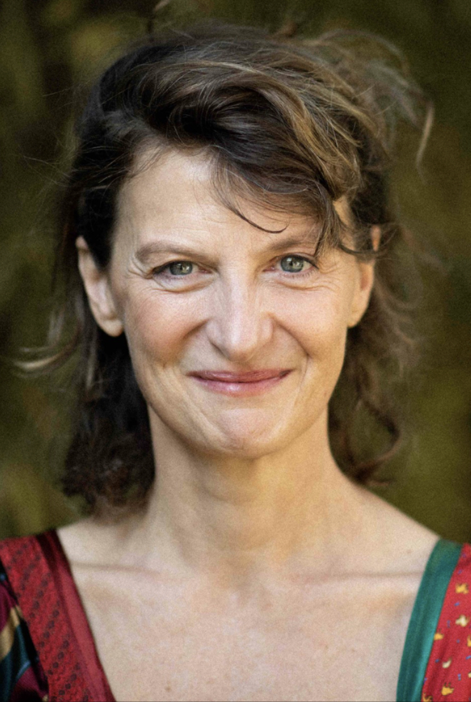

Biographie

Née à Vienne, Autriche, Marie-Elisabeth grandit en Belgique, où elle entame un double parcours en théâtre et arts plastiques à l'Academie des Beaux-Arys de Bruxelles. Elle déménage ensuite pour Paris, où elle entre à l'École Nationnale Supérieure des Beaux-Arts, pour étudier le dessin et la sculpture. Elle est reçue comme artiste en residence à Jérusalem à l'ecole de Bezalel. Son parcours atypique traverse l'écriture dramatique, la peinture, le clown; le cirque, et la scenographie et l'illustration. Elle écrit et joue six pieces de theatre, conçoit des affiches et rejoins le Cirque du Soleil en tant que clown dans le spectacle Quidam.
Parallèlement, elle développe une oeuvre visuelmle centrée sur la représentation du corps en mouvement à travers le dessin et la peinture. Elle a récemment illustré le livre "Le chien de Bergson" de Christophe Schaeffer et Jos Houbern, essai philosophique sur l'Art du Rire.
Elle est acceuillie en residence au Brésil au Kaaysa arts center, dans la Foret Atlantique. Elle y expose son travail lors d'une installation avec les habitants du village de Boicucanga. Elle a exposé à Paris en juin 2025 à la galerie Le Génie de la Batsille et exposera en decembre 2025 au Lavoir Vasserot de Saint Tropez.


Actualites
-
Décembre 2024 : Exposition au Lavoir Vasserot, Saint Tropez
-
Juin 2024 : Exposition à la Galerie Le Génie de la Bastille, Paris
-
Mars 2024 : Résidence artistique au Kaaysa Arts Center, Brésil
Contact
Marie Elisabeth Cornet
30 rue de Vincennes
93100 Montreuil
30 rue de Vincennes
93100 Montreuil